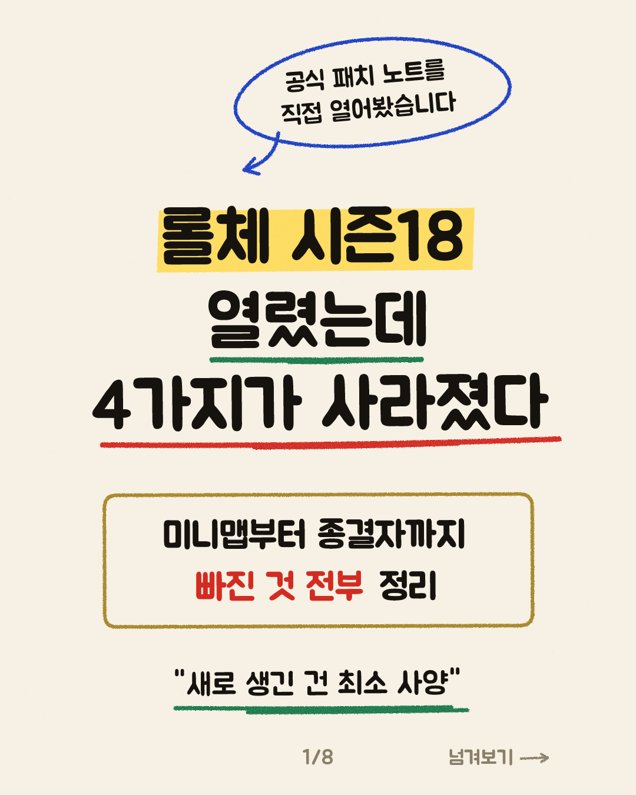
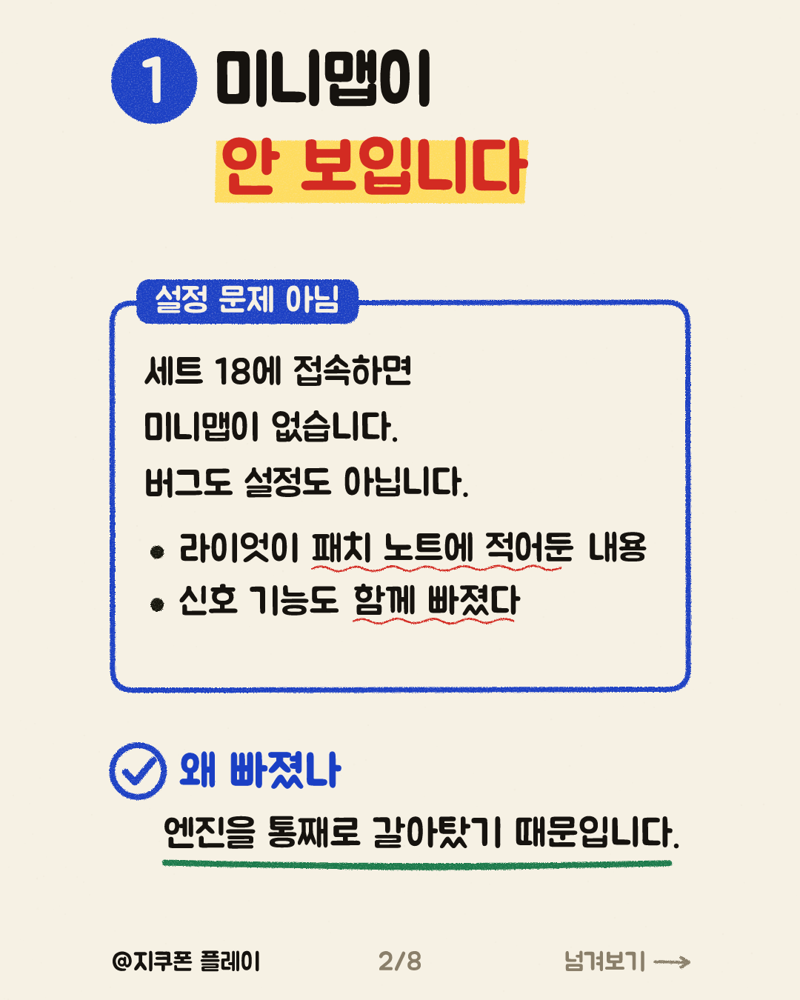
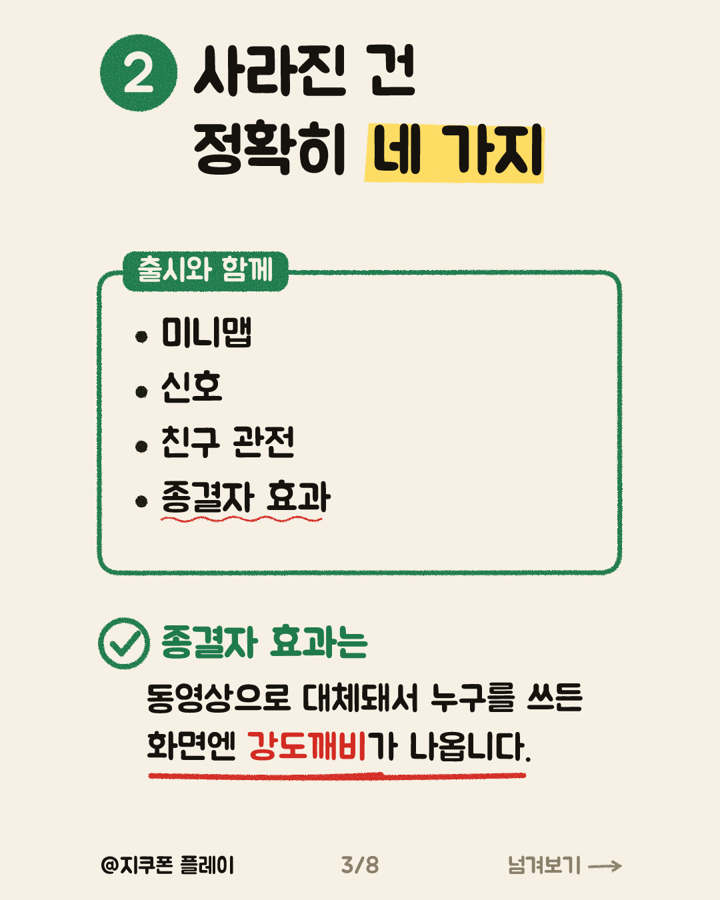
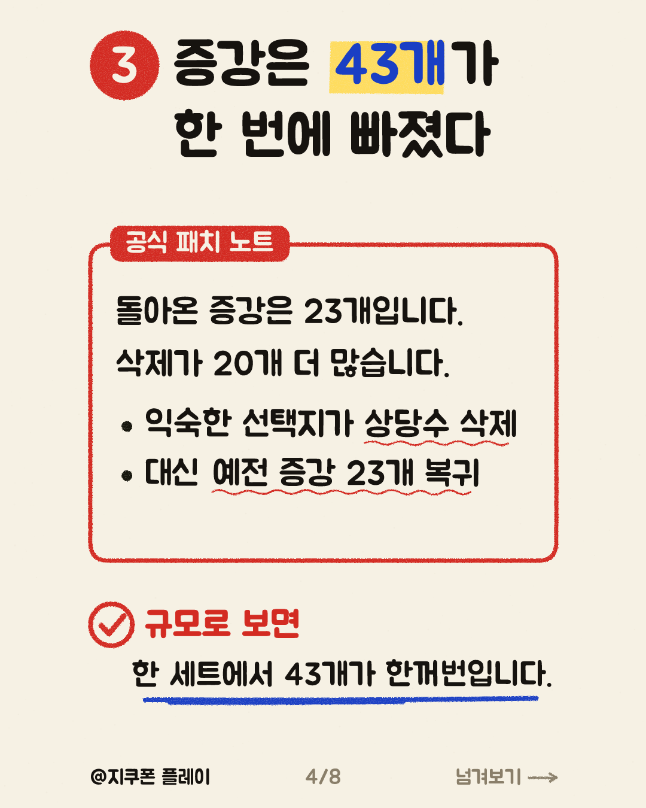
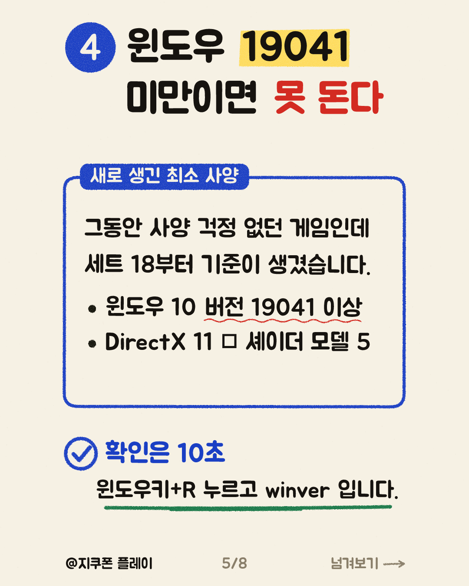
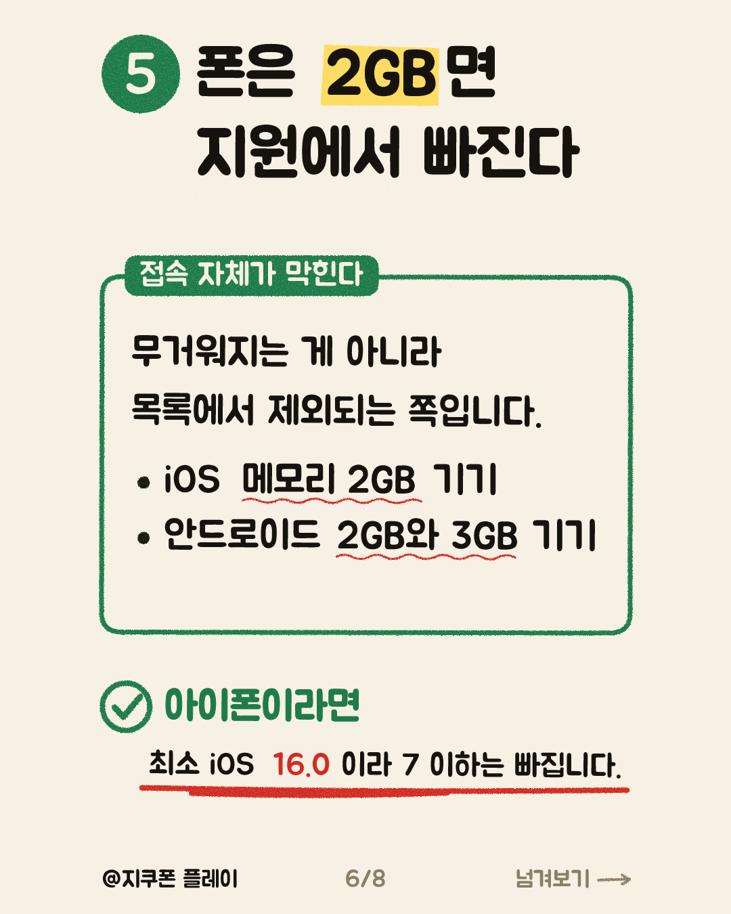
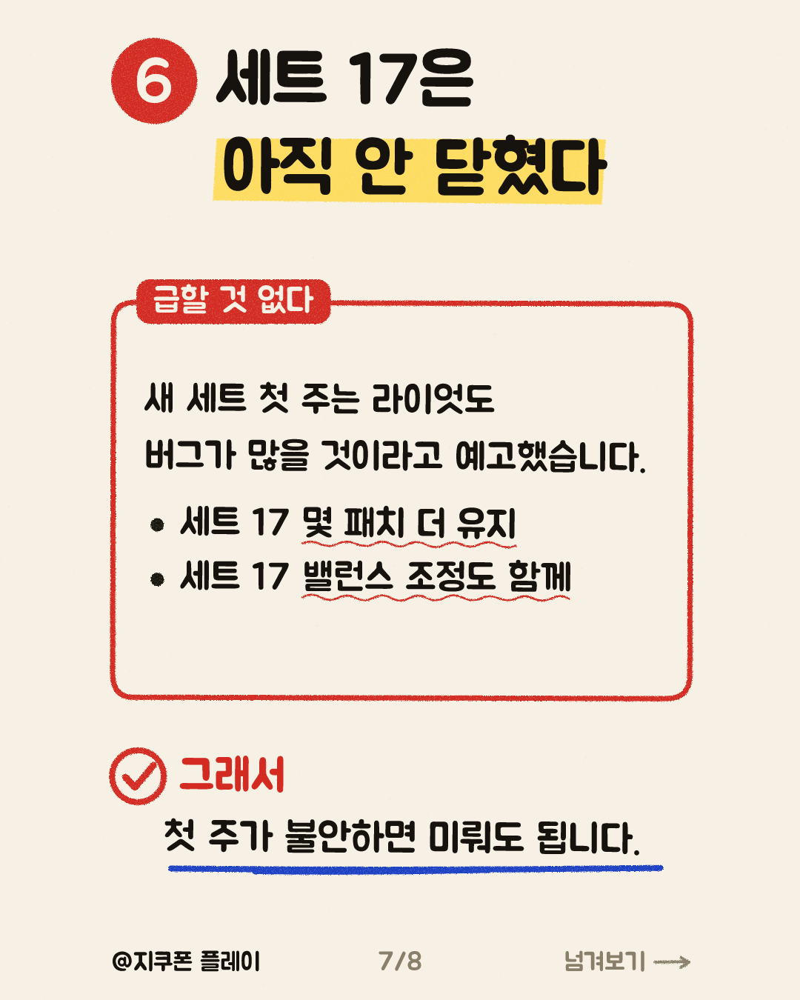
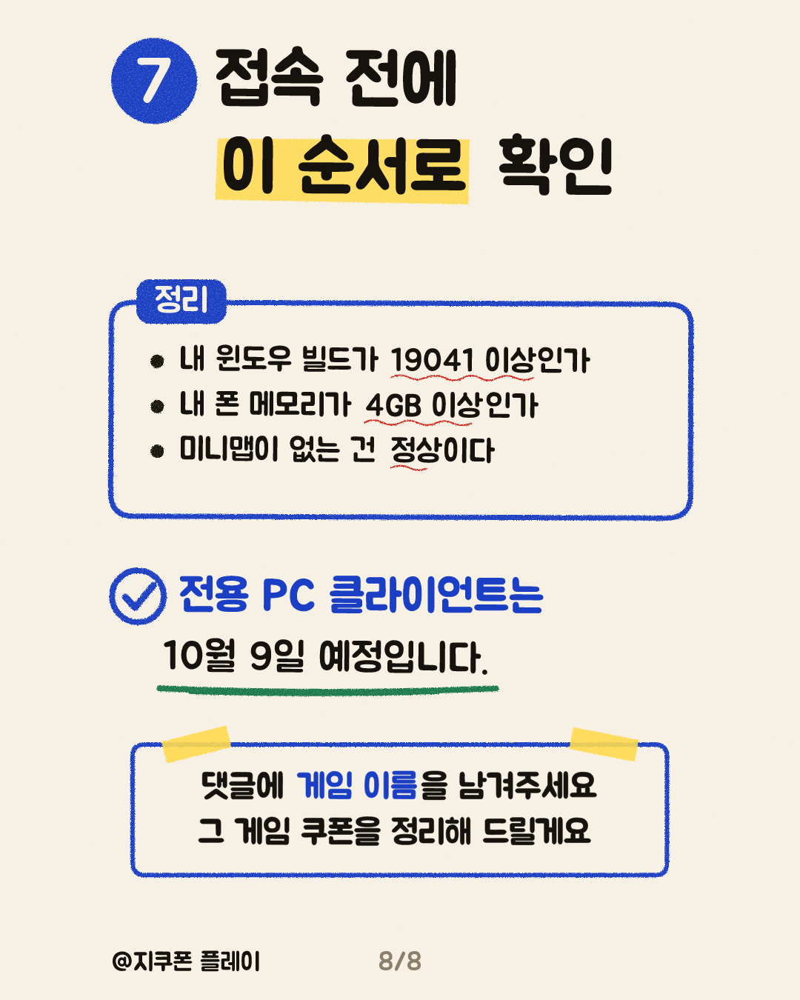

P1 · 후킹형 · 카드 1, 2, 3
롤체 시즌18이 8월 26일에 열렸는데, 접속하면 미니맵이 안 보입니다. 버그도 설정 문제도 아닙니다. 라이엇이 공식 패치 노트에 직접 적어둔 내용입니다. 미니맵과 신호, 친구 관전, 종결자 효과까지 네 가지가 출시에 함께 오지 못했습니다. 종결자 효과는 동영상으로 대체돼서 어떤 전략가를 쓰든 화면에는 강도깨비가 나옵니다. 미니맵 없어진 걸 오늘 처음 아셨나요?
카드는 길게 눌러 저장하세요. 링크는 조회수 2,000을 넘긴 뒤 답글로만 답니다.








롤체 시즌18이 8월 26일에 열렸는데, 접속하면 미니맵이 안 보입니다. 버그도 설정 문제도 아닙니다. 라이엇이 공식 패치 노트에 직접 적어둔 내용입니다. 미니맵과 신호, 친구 관전, 종결자 효과까지 네 가지가 출시에 함께 오지 못했습니다. 종결자 효과는 동영상으로 대체돼서 어떤 전략가를 쓰든 화면에는 강도깨비가 나옵니다. 미니맵 없어진 걸 오늘 처음 아셨나요?
롤체 시즌18은 사라진 게 기능만이 아닙니다. 증강이 43개 삭제되고 23개가 돌아왔습니다. 삭제가 20개 더 많습니다. 그리고 그동안 사양 걱정이 없던 게임에 최소 사양이 새로 생겼습니다. 윈도우 10 버전 19041 미만이면 이제 안 돌아갑니다. 폰도 마찬가지입니다. iOS 2GB, 안드로이드 2GB와 3GB 기기는 지원 목록에서 빠졌습니다. 무거워지는 게 아니라 접속 자체가 막히는 쪽입니다. 윈도우키와 R을 누르고 winver를 치면 10초면 확인됩니다. 내 빌드 번호 확인해 보셨나요?
롤체 시즌18 첫 주가 불안하다면 급하게 넘어갈 이유가 없습니다. 라이엇이 신규 엔진이라 평소보다 버그가 많을 것으로 예상한다고 먼저 적어뒀고, 세트 17 우주의 신들도 몇 패치 동안 더 유지된다고 공지했습니다. 세트 17용 밸런스 조정까지 18.1과 함께 들어갔습니다. 이번 전환의 마지막 조각인 전용 PC 클라이언트는 10월 9일 예정입니다. 다만 앞선 일정이 두 번 밀린 전례가 있어서 기준선으로만 두는 게 낫습니다. 세트 18 먼저 가시나요, 세트 17 더 붙잡으시나요?
롤체 시즌18에서 사라진 것 네 가지 미니맵, 신호, 친구 관전, 종결자 효과가 출시에 함께 오지 못했습니다. 증강은 43개가 삭제되고 23개가 돌아왔습니다. 대신 최소 사양이 새로 생겼습니다. PC는 윈도우 10 버전 19041 이상, 폰은 메모리 2GB 기기가 제외됩니다. 라이엇 공식 18.1 패치 노트를 직접 읽고 정리한 내용입니다. #롤체시즌18